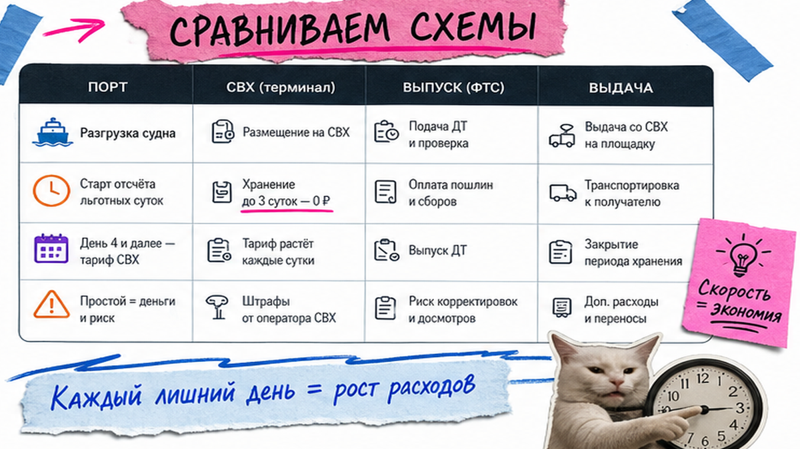
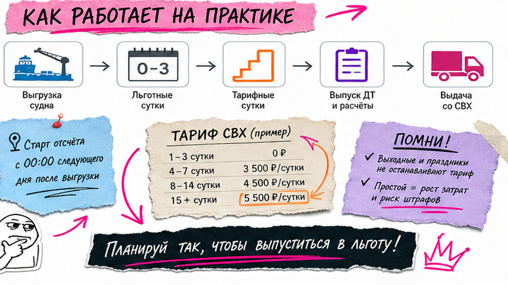
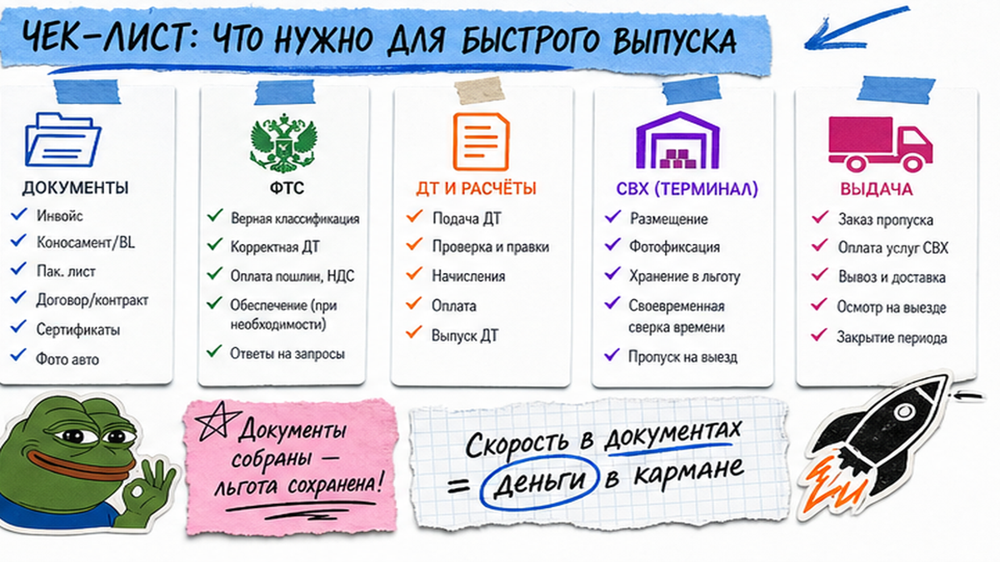

В чате написали "машина в порту Владивостока" – и кажется, что самое сложное позади. Вы выдыхаете, а через неделю приходит счёт: льготные сутки кончились, дальше лестница хранения по тысячам рублей в день – и это уже дорого. Типичная проблема новичка: не знать, когда кончается льгота. СВХ (склад временного хранения) – не "бесплатная парковка, пока идёт растаможка", а счётчик. Результат ниже: чек-лист до судна и на первые сутки – сможете назвать склад, льготу и когда бить тревогу, чтобы сэкономить на перестое.
Коротко: СВХ – охраняемая площадка под таможней, пока авто не выпустят. Закон даёт до 4 месяцев на временном хранении, но "бесплатные" 5–10 суток – правило склада. Узнайте свой СВХ и льготу в день выгрузки, заранее пополните лицевой счёт ФТС и не ждите конца льготы, чтобы подать декларацию.
Типичная ошибка новичка: путать законный срок и "бесплатные" дни. По ст. 101 ТК ЕАЭС товар может лежать на временном хранении до четырёх месяцев – но склад всё равно выставит прогрессивный тариф уже на шестые сутки. На практике во Владивостоке льгота часто 5–10 суток и уже "зашита" в ставку выгрузки.
Мы в Авто-Сейлс каждый день видим одну историю: человек думал, что "пока таможня думает – СВХ бесплатно". Нет. Счётчик крутится по правилам конкретного склада. Разберём, как не переплатить в 2026.

СВХ – охраняемая стоянка под таможенным контролем. Авто с ролкера или из контейнера нельзя "просто забрать с причала": сначала площадка, потом декларация, потом выпуск. Пока выпуска нет, машину для выезда ещё не отдают.
На пальцах: порт – вокзал, СВХ – камера хранения с охраной и кассой, таможня – контролёр на выходе. Без штампа контролёра камера авто не отдаст, даже если вы уже всё оплатили продавцу в Японии или Корее.
Во Владивостоке авто-СВХ несколько: часто встречаются ВАТ, Автоимпорт-ДВ, ДальВЭД, КМТС и другие. Адреса и кассы отличаются. Делать: в день "машина в порту" сразу спросить точное название склада и адрес. Не делать: считать, что "Владивосток" = один общий двор без тарифов.

Отсчёт льготных суток чаще идёт со дня выгрузки судна – не с того дня, когда вы открыли чат. Пока вы на даче, счётчик уже тикает. Льготный период обычно входит в ставку ПРР (погрузочно-разгрузочные работы: выгрузка и обработка).
Ориентиры 2026 по открытым справочникам (уточняйте у своего склада – прайсы меняются):
После льготы типичная лестница перестоя: примерно 700–1000 ₽/сутки → около 2000 ₽ → от 3000–5000+ ₽, у части складов на критическом перестое до 5000–9500 ₽/сутки. Это ориентиры рынка, не прайс Авто-Сейлс.
Отдельно от хранения идёт ПРР – часто 25 000–45 000 ₽. Хранение ≠ ПРР. Делать: спросить четыре цифры: льгота в сутках, дата старта, тарифы ступеней, стоимость ПРР. Не делать: верить фразе "пока растаможка – бесплатно".
| Параметр | Что это простыми словами | Ориентир 2026 |
|---|---|---|
| Законный срок | Максимум нахождения на временном хранении | до ~4 месяцев (ТК ЕАЭС) |
| Льготный период склада | "Бесплатные" сутки в тарифе СВХ | обычно 5–10 суток |
| ПРР | Выгрузка и обработка авто | часто 25–45 тыс. ₽ |
| Перестой | Сутки после льготы по прогрессивной шкале | от ~700–1000 ₽/сутки и выше |
Итоговый вердикт: Спрашивайте не "сколько можно по закону", а "сколько льготных суток на моём СВХ и с какой даты". Именно этот ответ спасает бюджет.

Перестой – не "злой склад", а пауза в вашем процессе. На практике чаще виноваты бумаги и ожидание, а не ворота СВХ.
Схема без перестоя:
Судно выгрузило → Знаете СВХ и льготу → ДТ в работе → Аванс на ЛК ФТС → Выпуск → Оплата склада → Вывоз в тот же день
Например, на Drive2 описывают перестой около 5000 ₽/сутки из-за медленного менеджера и позднего вывоза. Делать: держать в чате дату "льгота кончается". Не делать: ждать, что "само рассосётся".
Самый дешёвый день на СВХ – тот, который не наступил. Соберите пакет, пока судно ещё в пути.
Точные суммы пошлин и утильсбора здесь не публикуем: расчёт зависит от авто и года. Актуальный расчёт и подбор – в каталоге avto-sales125.ru, без форм на этой странице.
Делать: закрыть пакет и аванс ФТС до ETA судна. Не делать: начинать документы в день выгрузки – вы уже съедаете льготу.
Первые 24 часа после выгрузки решают, будет ли спокойный выпуск или лестница тарифов.
К вечеру первого дня нужен короткий лист: склад, льгота, дата "горящей" границы, статус ДТ, план вывоза. Нет пункта – уже риск денег.
Делать: пройти чек-лист в первые сутки. Не делать: откладывать вопросы на "когда будет время".
Счётчик не ставится на паузу от вашего спокойствия. Пишите в Telegram @avtosales125, если:
В сообщении сразу укажите VIN/номер кузова, название СВХ и дату выгрузки. Офис Авто-Сейлс во Владивостоке (Днепровская 40а, стр. 4) – хаб логистики: порт, СВХ, выдача по РФ.
Делать: эскалировать с фактами, пока льгота ещё жива. Не делать: ждать конца льготных суток "на всякий случай".
Критерий успеха простой. Вы сможете назвать вслух:
Если четыре пункта закрыты – вы управляете процессом, а не наблюдаете за счётчиком. Если нет – вернитесь к чек-листу сегодня и проверьте слабые места.
Материал проверен: Редакция Авто-Сейлс (эксперты по авто под заказ из Японии, Кореи и Китая).
Достоверность: факты сверены с открытыми обзорами СВХ Владивостока 2026 (PeregonPro, VL-BROKER, WhiteChina), правовым разбором временного хранения (Kontur / ст. 101 ТК ЕАЭС) и кейсами перестоя; тарифы – ориентиры рынка на июль 2026, актуальный расчёт заказа – в каталоге.
Обычно 5–10 суток – коммерческая льгота склада, часто внутри ставки выгрузки. Точную цифру спросите у своего СВХ в день выгрузки. Законные до 4 месяцев – про другой лимит, не про "бесплатно".
Ориентир 2026: примерно 700–1000 ₽, затем около 2000 ₽, дальше от 3000–5000+ ₽/сутки, у части складов выше. Берите актуальный прайс склада письменно.
ПРР – выгрузка и обработка авто (часто 25–45 тыс. ₽). Хранение – плата за сутки на площадке после льготы. Не смешивайте в одной сумме "за СВХ".
Да: пакет документов до судна, аванс на лицевой счёт ФТС, ранняя подача ДТ и готовый вывоз. Частый тормоз – ждать оплаты или ответа "завтра", пока льгота тает.
Чаще со дня выгрузки судна. Уточните у склада: календарные сутки, час среза, входит ли день выгрузки. Без этой даты вы не управляете риском.
VIN или номер кузова, название СВХ, дата выгрузки, что уже сделано по ДТ и оплатам. Чем конкретнее вход, тем быстрее сдвиг по выпуску и вывозу.